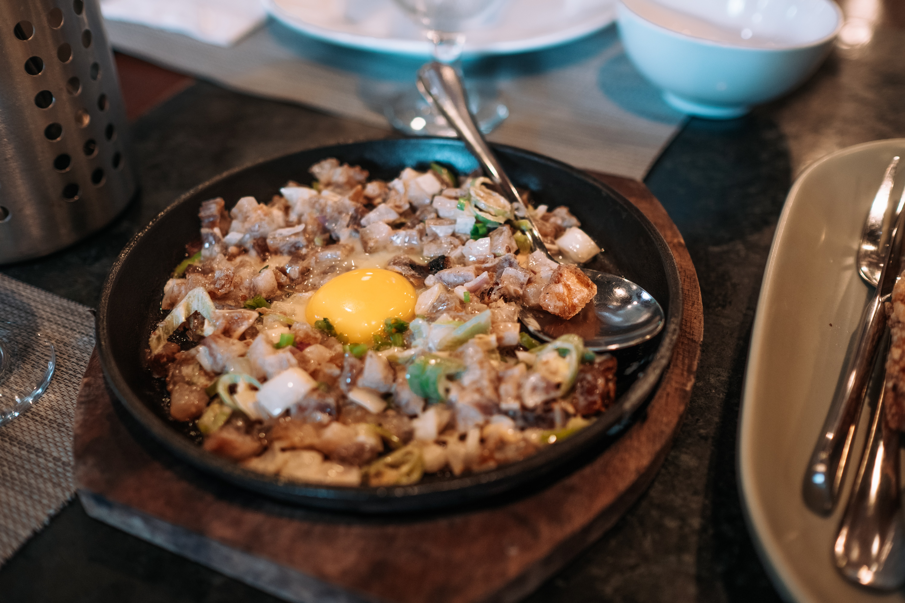
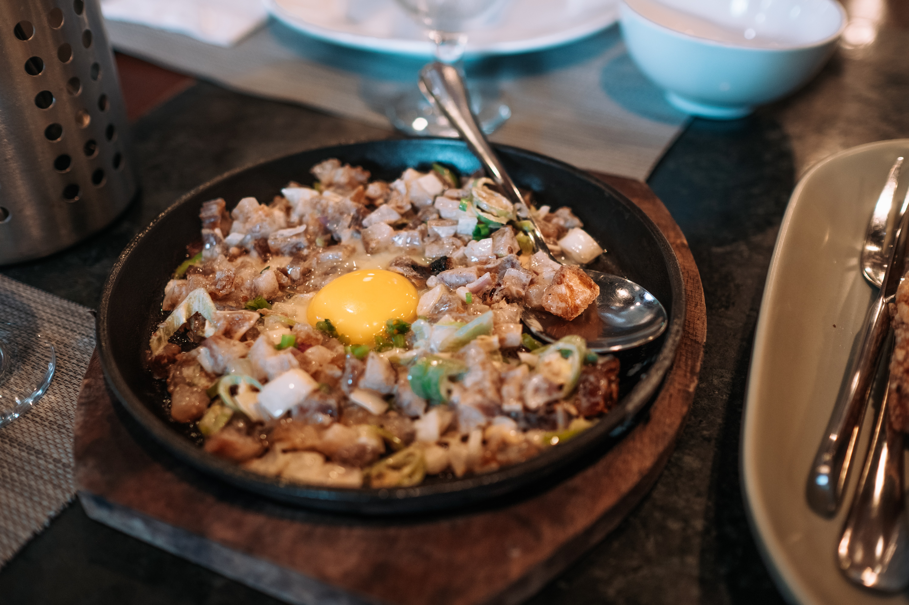

About the Website
"Get ready to savor the flavors! My recipe collection is a culinary adventure you won't want to miss. Learn more about me and my passion for cooking up a storm."
Preperation
My project is a requirement for my Web Programming class, but it's also an opportunity for me to showcase my passion for design and creativity. As an aspiring designer, I'm excited to use this project as a platform to hone my skills and bring my ideas to life. Join me on this journey as I bring my vision to the web.
The Recipes
Filipino food is a celebration of flavors, textures, and ingredients that reflect the diversity of the Philippines and its people. And as the world becomes increasingly connected through social media, Filipino food has found a new platform to share its love and richness with the world. It's a way to connect with the culture and heritage. Food is more than just sustenance. It's a way for us to connect with our roots and identity. When we share our food, we share a part of ourselves and our culture. This is particularly important for the Filipino diaspora, who may have left their homeland and struggle to maintain a sense of connection with their culture. By cooking and sharing Filipino food, we are keeping our culture alive and passing it on to the next generation. But Filipino food is not just for Filipinos. It's a cuisine that has something to offer everyone, from savory adobo to sweet halo-halo. Filipino food is a celebration of flavors and textures that reflect the country's rich history and diverse influences, from Spanish to Chinese to Malay. It's a cuisine that is constantly evolving, but never losing its unique identity.
Social Media
Social media has played a significant role in the recent popularity of Filipino food. Platforms like Instagram and YouTube have given Filipino chefs, home cooks, and food bloggers a platform to showcase their talents and share their love for Filipino cuisine with the world. With beautiful food photography, easy-to-follow recipes, and engaging storytelling, social media has made Filipino food accessible and appealing to a global audience. In addition to spreading awareness about Filipino food, social media has also become a tool for cultural exchange and education. Through food, people can learn about the history, traditions, and customs of the Philippines. They can gain a better understanding of the country's diversity and complexity, and how it is reflected in its food.

 
